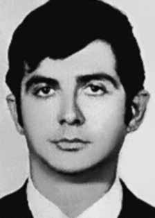

Gelson
Reicher
CIRCUNSTÂNCIAS DA MORTE
Gelson Reicher morreu no dia 20 de janeiro de 1972, juntamente com seu companheiro de militância da Ação Libertadora Nacional (ALN), Alex de Paula Xavier Pereira, em ação perpetrada por agentes do DOI-CODI.
A nota oficial, distribuída pelos órgãos de segurança, seria divulgada pela imprensa dois dias após o suposto confronto armado. A edição de 22 de janeiro de 1972, de O Estado de São Paulo, informava que “O volks de placa CK 4848 corre pela Avenida República do Líbano. Em um cruzamento, o motorista não respeita o sinal vermelho e quase atropela uma senhora que leva uma criança no colo. Pouco depois, o cabo Silas Bispo Feche, da PM, que participa de uma patrulha, manda o carro parar. Quando o volks para, saem do carro o motorista e seu acompanhante atirando contra o cabo e seus companheiros; os policiais também atiram. Depois de alguns minutos três pessoas estão mortas, uma outra ferida. Os mortos são o cabo da Polícia Militar e os ocupantes do volks, terroristas Alex de Paula Xavier Pereira e Gelson Reicher”.
Desde o início da década de 1970, Gelson Reicher e Alex de Paula eram acusados pelos órgãos de segurança de participação em diversas ações armadas. Ambos tinham suas fotos estampadas em cartazes que os identificavam como “Bandidos Terroristas Procurados”. O trabalho de desvendamento das circunstâncias que culminaram nas mortes de Gelson e Alex ganhou impulso, contraditoriamente, com a nota que fora produzida pelos órgãos de repressão para simular a efetiva dinâmica dos fatos relacionados a essas mortes.
Na nota distribuída à imprensa, havia a informação dos codinomes que os dois militantes utilizavam na clandestinidade. Foi com esses nomes que os agentes do Estado registraram a entrada dos corpos de Gelson e Alex no Instituto Médico Legal; Gelson Reicher como “Emiliano Sessa” e Alex Xavier como “João Maria de Freitas”. Com esses nomes falsos, também enterraram os dois militantes como indigentes no cemitério de Perus em São Paulo; e, contraditoriamente, graças a essa informação, foi possível encontrar os corpos registrados com os mencionados nomes falsos.
Os responsáveis pelas autópsias dos dois militantes foram os médicos legistas Issac Abramovitch e Abeylard de Queiroz Orsini. Isaac Abramovitch era vizinho da família de Gelson Reicher e o conhecia desde menino. Quando convidado a depor, em 7 de fevereiro de 1991, na Comissão Parlamentar de Inquérito que investigou a vala clandestina do Cemitério de Perus, Isaac alegou que, embora conhecesse Gelson, não o reconheceu quando realizou a autópsia; não podendo, portanto, evitar que fosse sepultado com nome falso. Entretanto, de acordo com o testemunho do pai de Gelson, Berel Reicher, foi o próprio Isaac que avisou a família sobre a morte do militante, o que auxiliou os familiares a resgatar o corpo e, em poucos dias, sepultá-lo no cemitério israelita.
Transcorridos mais de 40 anos, as investigações sobre esse episódio, realizadas ao longo das últimas décadas, e as pesquisas e estudos realizados pela Comissão Nacional da Verdade revelaram a existência de inúmeros elementos de convicção que permitem apontar que a versão divulgada à época não se sustenta. Desde a divulgação da nota oficial comunicando as mortes de Gelson e Alex, os familiares desses militantes levantaram dúvidas acerca da dinâmica das ações que culminaram em suas mortes. Quando os arquivos do Departamento de Ordem Política e Social de São Paulo (DOPS/SP) foram abertos, em 1992, foram localizadas fotos dos corpos de Alex e Gelson, gerando novos questionamentos.
A visível presença de inúmeros hematomas e escoriações incitou a Comissão de Familiares de Mortos e Desaparecidos Políticos a encaminhar cópia das fotografias encontradas para o médico legista Nelson Massini e para o perito criminal Celso Nenevê, com o pedido de realização de um parecer. O Dr. Celso Nenevê descreveu todas as lesões produzidas por tiro, concluindo não poder restabelecer a dinâmica do evento por falta de elementos. Gelson recebera dez tiros: três na cabeça, três no tronco, um em cada braço e cada perna. Mas, de forma idêntica ao constatado no caso de Alex, a foto do corpo de Gelson mostrava lesões não descritas pela autópsia realizada em 1972.
Nas palavras do Dr. Nenevê: “[…] na região orbitária direita, na pálpebra superior direita, e na região frontal direita a presença de edema traumático, aparentemente associado a uma extensa equimose. A formação desta lesão apresenta características da ação contundente de algum instrumento […] Na linha da região zigomática, manchas escuras, com características genéricas de lesões, sem que se possa definir suas naturezas, e características do(s) instrumento(s) que as produziram, não se encontrando elas descritas no Laudo. O mesmo pode ser observado para a região deltoidea esquerda e região mamária direita.”
Além do destaque para a ausência de registro das escoriações mencionadas, o Dr. Celso Nenevê destacou a probabilidade de que após Gelson Reicher ter seus quatro membros atingidos por projéteis de arma de fogo, “não oferecia mais condições de resistência armada nem tampouco de fuga.” As conclusões do perito ressaltam que “o edema e a equimose verificados na região orbital direita e circunvizinhas, se de natureza contusa, as quais para sua formação necessitam, obrigatoriamente, do contato físico entre o instrumento e a vítima, por conseguinte, de grande proximidade. Este ferimento não coaduna com o quadro comumente verificado em tiroteios, sendo possível que esta lesão contusa tenha sido produzida após as lesões perfuro-contusas anteriormente relacionadas, em circunstâncias que não estão esclarecidas, uma vez que a vítima provavelmente apresentava-se dominada em decorrência dos ferimentos em seus membros”.
Pode-se concluir, dessa forma, que Gelson Reicher teria sido submetido à tortura. As análises do Dr. Massini destacam que o laudo do IML, assinado por Issac Abramovitch e Abeylard de Queiroz Orsini, optou por descrever apenas os ferimentos produzidos por projétil de arma de fogo e não registrou nenhuma referência às equimoses e escoriações que se faziam visíveis nos corpos dos dois militantes. A partir da divulgação do laudo elaborado pelo Dr. Massini, que atestava a prática de tortura, novas pesquisas foram empreendidas.
A narrativa que havia sido apresentada pelos órgãos de segurança sustentava que o encontro entre os agentes da repressão e os militantes da ALN fora casual, culminando em troca de tiros e na morte de Gelson e Alex. Por intermédio de pesquisas realizadas nos arquivos do DOPS/SP, foram localizados documentos que revelam aspectos que indicam a fragilidade da versão oficial. Essa evidência se relaciona ao fato de que os corpos de Gelson Reicher e Alex de Paula deram entrada no IML trajando apenas cuecas, o que sugere que os militantes, após o suposto confronto armado do dia 20 de janeiro de 1972, foram conduzidos para outro local, antes de ingressarem no Instituto Médico-Legal.
No dia 24 de fevereiro de 2014, a Comissão Nacional da Verdade (CNV), em parceria com a Comissão da Verdade do Estado de São Paulo “Rubens Paiva”, realizou audiência pública sobre a morte de oito militantes da ALN mortos em São Paulo. Dentre as vítimas da ação repressiva do Estado encontrava-se Gelson Reicher. A equipe de peritos da CNV, que havia produzido laudo pericial sobre as circunstâncias da morte do militante Alex de Paula Xavier Pereira, apresentou análise comparativa com o caso de Gelson Reicher. As análises comparativas entre o laudo de necropsia, que fora concluído no Instituto Médico Legal (IML) de São Paulo, em 1972, pelos legistas Issac Abramovitch e Abeylard de Queiroz Orsini, e o laudo produzido por Nelson Massini em 1996, revelaram incontornáveis contradições.
Também corrobora com a desconstrução da versão apresentada pela ditadura, o depoimento prestado à CNV pelo juiz auditor Nelson da Silva Machado Guimarães, no dia 30 de julho de 2014, quando foi indagado a respeito da ocultação dos cadáveres de Alex de Paula Xavier e Gelson Reicher, nos seguintes termos:
CNV – É, Alex de Paula Xavier Pereira e Gelson Reicher. O senhor quis extinguir a punibilidade deles, para não aceitar uma denúncia e um processo contra pessoas que o senhor já tinha verificado que estavam mortas.
Nelson da Silva Machado Guimarães – Mas em que eu me baseio aí?
CNV – O senhor tem esse processo, e eu tenho aqui os documentos, que eu posso lhe passar daqui a pouco. Nesse processo, o senhor solicitou tanto à autoridade policial militar como à autoridade policial, ao DOPS, um delegado, o senhor solicitou o atestado…
Nelson da Silva Machado Guimarães – De óbito.
CNV – …de óbito. Esse atestado de óbito o senhor solicitou indicando o nome verdadeiro. Veio o atestado com o nome falso, que era como os atestados eram feitos, para viabilizar essa política de desaparecimento. O senhor extinguiu a punibilidade com base num atestado falso, e sabia que era falso. O senhor sabia que era falso, porque o senhor deu o nome verdadeiro dele, para pedir. Tem aqui a documentação. (…).
Além de demonstrar a participação do Poder Judiciário no processo de ocultação de cadáver dos dois militantes, o depoimento confirma que os órgãos de segurança tinham conhecimento da verdadeira identidade dos militantes quando fizeram o sepultamento com os nomes falsos, demonstrando a ação deliberada que visava impedir ou dificultar fortemente que as famílias localizassem os corpos.
Os restos mortais de Gelson Reicher foram enterrados como indigente no Cemitério Dom Bosco, em Perus (SP), sendo posteriormente trasladados por sua família para o Cemitério Israelita em São Paulo.
Gelson Reicher died on January 20, 1972, together with his fellow member of the National Liberation Action (ALN), Alex de Paula Xavier Pereira, in an action carried out by DOI-CODI agents.
The official note, distributed by security agencies, would be released by the press two days after the alleged armed confrontation. The edition of January 22, 1972, of O Estado de São Paulo, reported that "The Volkswagen with license plate number CK 4848 runs along Avenida República do Libano. At an intersection, the driver does not respect the red light and almost runs over a lady who is carrying a child on her lap. Shortly afterwards, Corporal Silas Bispo Feche, from the Military Police, who is participating in a patrol, orders the car to stop. When the Volkswagen stops, the driver and his companion get out of the car, shooting at the corporal and his companions; police officers also shoot. After a few minutes, three people are dead, another injured. The dead are the Military Police corporal and the occupants of the VW, terrorists Alex de Paula Xavier Pereira and Gelson Reicher”.
Since the beginning of the 1970s, Gelson Reicher and Alex de Paula were accused by security agencies of participating in several armed actions. Both had their photos printed on posters identifying them as “Wanted Terrorist Bandits”. The work of unraveling the circumstances that culminated in the deaths of Gelson and Alex gained momentum, contradictorily, with the note that had been produced by the repression bodies to simulate the effective dynamics of the facts related to these deaths.
In the note distributed to the press, there was information about the code names that the two militants used in hiding. It was with these names that State agents registered the entry of Gelson and Alex's bodies into the Legal Medical Institute; Gelson Reicher as “Emiliano Sessa” and Alex Xavier as “João Maria de Freitas”. Using these false names, they also buried the two militants as indigents in the Perus cemetery in São Paulo; and, contradictorily, thanks to this information, it was possible to find the bodies registered with the aforementioned false names.
Those responsible for the autopsies of the two militants were coroners Issac Abramovitch and Abeylard de Queiroz Orsini. Isaac Abramovitch was a neighbor of Gelson Reicher's family and had known him since he was a boy. When invited to testify, on February 7, 1991, at the Parliamentary Commission of Inquiry that investigated the clandestine grave at the Perus Cemetery, Isaac claimed that, although he knew Gelson, he did not recognize him when he performed the autopsy; Therefore, he could not prevent him from being buried under a false name. However, according to the testimony of Gelson's father, Berel Reicher, it was Isaac himself who informed the family about the militant's death, which helped the family to rescue the body and, within a few days, bury it in the Israeli cemetery.
More than 40 years later, investigations into this episode, carried out over the last few decades, and research and studies carried out by the National Truth Commission revealed the existence of numerous elements of conviction that allow us to point out that the version published at the time is not sustainable. Since the release of the official note announcing the deaths of Gelson and Alex, the families of these militants have raised doubts about the dynamics of the actions that culminated in their deaths. When the archives of the São Paulo Department of Political and Social Order (DOPS/SP) were opened in 1992, photos of Alex and Gelson's bodies were found, generating new questions.
The visible presence of numerous bruises and abrasions prompted the Commission of Relatives of the Political Dead and Missing to forward a copy of the photographs found to the coroner Nelson Massini and the criminal expert Celso Nenevê, with the request for an opinion. Dr. Celso Nenevê described all the injuries caused by gunshots, concluding that he could not reestablish the dynamics of the event due to lack of elements. Gelson had received ten shots: three in the head, three in the torso, one in each arm and each leg. But, identical to what was found in Alex's case, the photo of Gelson's body showed injuries not described in the autopsy carried out in 1972.
In the words of Dr. Nenevê: "[...] in the right orbital region, in the right upper eyelid, and in the right frontal region the presence of traumatic edema, apparently associated with extensive ecchymosis. The formation of this lesion presents characteristics of the blunt action of some instrument [...] In the line of the zygomatic region, dark spots, with generic characteristics of lesions, without being able to define their nature, and characteristics of the instrument(s) that produced them, which are not described in the Report. The same can be observed for the left deltoid region and right mammary region.”
In addition to highlighting the absence of records of the aforementioned abrasions, Dr. Celso Nenevê highlighted the probability that after Gelson Reicher had his four limbs hit by firearm projectiles, “it no longer offered conditions for armed resistance or escape.” The expert's conclusions highlight that "the edema and ecchymosis observed in the right orbital region and surrounding areas, if of a blunt nature, which for their formation necessarily require physical contact between the instrument and the victim, therefore, of great proximity. This injury is not consistent with the situation commonly seen in shootings, and it is possible that this blunt injury was produced after the perforating-blunt injuries previously listed, in circumstances that are not clarified, since that the victim was probably subdued due to the injuries to his limbs.”
It can therefore be concluded that Gelson Reicher would have been subjected to torture. Dr. Massini's analyzes highlight that the IML report, signed by Issac Abramovitch and Abeylard de Queiroz Orsini, chose to describe only the injuries caused by a firearm projectile and did not record any reference to the bruises and abrasions that were visible on the bodies of the two militants. Following the publication of the report prepared by Dr. Massini, which attested to the practice of torture, new research was undertaken.
The narrative that had been presented by the security agencies maintained that the meeting between the repression agents and the ALN militants was random, culminating in an exchange of gunfire and the death of Gelson and Alex. Through research carried out in the DOPS/SP archives, documents were located that reveal aspects that indicate the fragility of the official version. This evidence is related to the fact that the bodies of Gelson Reicher and Alex de Paula were admitted to the IML wearing only underwear, which suggests that the militants, after the alleged armed confrontation on January 20, 1972, were taken to another location, before entering the Medical-Legal Institute.
On February 24, 2014, the National Truth Commission (CNV), in partnership with the Truth Commission of the State of São Paulo “Rubens Paiva”, held a public hearing on the death of eight ALN militants killed in São Paulo. Among the victims of the State's repressive action was Gelson Reicher. The CNV expert team, which had produced an expert report on the circumstances surrounding the death of militant Alex de Paula Xavier Pereira, presented a comparative analysis with the case of Gelson Reicher. Comparative analyzes between the autopsy report, which was completed at the Legal Medical Institute (IML) of São Paulo, in 1972, by coroners Issac Abramovitch and Abeylard de Queiroz Orsini, and the report produced by Nelson Massini in 1996, revealed unavoidable contradictions.
Also corroborating the deconstruction of the version presented by the dictatorship is the statement given to the CNV by the auditor judge Nelson da Silva Machado Guimarães, on July 30, 2014, when he was asked about the concealment of the bodies of Alex de Paula Xavier and Gelson Reicher, in the following terms:
CNV – Yes, Alex de Paula Xavier Pereira and Gelson Reicher. You wanted to eliminate their punishment, so as not to accept a complaint and a lawsuit against people who you had already verified were dead.
Nelson da Silva Machado Guimarães – But what am I based on there?
CNV – You have this process, and I have the documents here, which I can give you shortly. In this process, you requested both the military police authority and the police authority, the DOPS, a delegate, you requested the certificate...
Nelson da Silva Machado Guimarães – Death.
CNV – …of death. You requested this death certificate indicating your real name. The certificate came with a false name, which was how the certificates were made, to make this policy of disappearance possible. You extinguished the punishment based on a false certificate, and you knew it was false. You knew it was fake, because you gave his real name to ask for it. Here's the documentation. (…).
In addition to demonstrating the participation of the Judiciary in the process of hiding the corpses of the two militants, the testimony confirms that the security agencies were aware of the true identity of the militants when they buried them under false names, demonstrating the deliberate action that aimed to prevent or make it very difficult for the families to locate the bodies.
Gelson Reicher's remains were buried as a pauper in the Dom Bosco Cemetery, in Perus (SP), and were later transferred by his family to the Israelite Cemetery in São Paulo.
Gelson Reicher murió el 20 de enero de 1972, junto a su compañero de Acción de Liberación Nacional (ALN), Alex de Paula Xavier Pereira, en una acción llevada a cabo por agentes del DOI-CODI.
La nota oficial, distribuida por organismos de seguridad, sería difundida por la prensa dos días después del presunto enfrentamiento armado. La edición del 22 de enero de 1972, de O Estado de São Paulo, informó que "El Volkswagen con matrícula CK 4848 circula por la Avenida República do Libano. En un cruce, el conductor no respeta el semáforo en rojo y casi atropella a una señora que lleva un niño en su regazo. Poco después, el cabo Silas Bispo Feche, de la Policía Militar, que participa en una patrulla, ordena al coche que se detenga. Cuando el Volkswagen se detiene, el conductor y su acompañante bajan del auto, disparando contra el cabo y sus acompañantes; luego de unos minutos, tres personas resultan muertas, otra herida es el cabo de la Policía Militar y los ocupantes del VW, los terroristas Alex de Paula Xavier Pereira y Gelson Reicher”.
Desde principios de los años 1970, Gelson Reicher y Alex de Paula fueron acusados por los organismos de seguridad de participar en varias acciones armadas. Las fotografías de ambos estaban impresas en carteles que los identificaban como “bandidos terroristas buscados”. El trabajo de desentrañar las circunstancias que culminaron con las muertes de Gelson y Alex cobró impulso, contradictoriamente, con la nota que habían elaborado los órganos de represión para simular la dinámica efectiva de los hechos relacionados con esas muertes.
En la nota distribuida a la prensa había información sobre los nombres en clave que los dos militantes utilizaron para esconderse. Fue con estos nombres que agentes del Estado registraron el ingreso de los cuerpos de Gelson y Alex al Instituto Médico Legal; Gelson Reicher como “Emiliano Sessa” y Alex Xavier como “João Maria de Freitas”. Usando estos nombres falsos, también enterraron a los dos militantes como indigentes en el cementerio de Perus, en São Paulo; y, contradictoriamente, gracias a esta información se pudo dar con los cadáveres registrados con los nombres falsos antes mencionados.
Los responsables de las autopsias de los dos militantes fueron los forenses Issac Abramovitch y Abeylard de Queiroz Orsini. Isaac Abramovitch era vecino de la familia de Gelson Reicher y lo conocía desde niño. Al ser invitado a declarar, el 7 de febrero de 1991, ante la Comisión Parlamentaria de Investigación que investigó la fosa clandestina en el Cementerio de Perus, Isaac afirmó que, aunque conocía a Gelson, no lo reconoció cuando le realizó la autopsia; Por lo tanto, no pudo evitar que lo enterraran con un nombre falso. Sin embargo, según el testimonio del padre de Gelson, Berel Reicher, fue el propio Isaac quien informó a la familia de la muerte del militante, lo que ayudó a la familia a rescatar el cuerpo y, a los pocos días, enterrarlo en el cementerio israelí.
Más de 40 años después, las investigaciones sobre este episodio, realizadas a lo largo de las últimas décadas, y las investigaciones y estudios realizados por la Comisión Nacional de la Verdad revelaron la existencia de numerosos elementos de convicción que permiten señalar que la versión publicada en su momento no es sostenible. Desde la difusión de la nota oficial que anuncia la muerte de Gelson y Alex, los familiares de estos militantes han planteado dudas sobre la dinámica de las acciones que culminaron con sus muertes. Cuando se abrieron los archivos del Departamento de Orden Político y Social de São Paulo (DOPS/SP), en 1992, se encontraron fotografías de los cuerpos de Alex y Gelson, lo que generó nuevas preguntas.
La presencia visible de numerosos hematomas y abrasiones llevó a la Comisión de Familiares de Muertos y Desaparecidos Políticos a enviar copia de las fotografías encontradas al forense Nelson Massini y al criminalista Celso Nenevê, con el pedido de opinión. El doctor Celso Nenevê describió todas las lesiones provocadas por disparos de arma de fuego, concluyendo que no pudo restablecer la dinámica del evento por falta de elementos. Gelson había recibido diez disparos: tres en la cabeza, tres en el torso, uno en cada brazo y cada pierna. Pero, al igual que lo encontrado en el caso de Alex, la fotografía del cuerpo de Gelson mostraba lesiones no descritas en la autopsia realizada en 1972.
En palabras del Dr. Nenevê: "[...] en la región orbitaria derecha, en el párpado superior derecho y en la región frontal derecha la presencia de edema traumático, aparentemente asociado a equimosis extensa. La formación de esta lesión presenta características de la acción contundente de algún instrumento [...] En la línea de la región cigomática, manchas oscuras, con características genéricas de lesiones, sin poder definir su naturaleza, y características del instrumento(s) que las produjeron, que no están descritas en el Informe. Lo mismo se puede observar en la región deltoides izquierda y en la región mamaria derecha”.
Además de resaltar la ausencia de registros de las mencionadas abrasiones, el doctor Celso Nenevê destacó la probabilidad de que después de que Gelson Reicher fuera impactado en sus cuatro extremidades por proyectiles de arma de fuego, “ya no ofreciera condiciones para la resistencia armada o la fuga”. Las conclusiones del perito resaltan que "el edema y equimosis observados en la región orbitaria derecha y zonas aledañas, son de carácter contundente, que para su formación requieren necesariamente un contacto físico entre el instrumento y la víctima, por lo tanto, de gran proximidad. Esta lesión no se corresponde con la situación comúnmente vista en tiroteos, y es posible que esta lesión contundente se haya producido después de las lesiones punzantes-contundentes anteriormente enumeradas, en circunstancias que no están aclaradas, ya que la víctima probablemente quedó sometida a causa de las lesiones". a sus extremidades”.
Por tanto, se puede concluir que Gelson Reicher habría sido sometido a tortura. Los análisis del Dr. Massini destacan que el informe del IML, firmado por Issac Abramovitch y Abeylard de Queiroz Orsini, optó por describir únicamente las heridas causadas por un proyectil de arma de fuego y no registró ninguna referencia a los hematomas y abrasiones visibles en los cuerpos de los dos militantes. Tras la publicación del informe elaborado por el Dr. Massini, que daba testimonio de la práctica de la tortura, se emprendieron nuevas investigaciones.
La narrativa presentada por los organismos de seguridad sostenía que el encuentro entre los agentes de represión y los militantes de la ALN fue aleatorio, culminando con un intercambio de disparos y la muerte de Gelson y Alex. A través de investigaciones realizadas en los archivos del DOPS/SP, se localizaron documentos que revelan aspectos que indican la fragilidad de la versión oficial. Esta evidencia se relaciona con que los cuerpos de Gelson Reicher y Alex de Paula fueron ingresados al IML vistiendo sólo ropa interior, lo que sugiere que los militantes, luego del supuesto enfrentamiento armado del 20 de enero de 1972, fueron trasladados a otro lugar, antes de ingresar al Instituto Médico Legal.
El 24 de febrero de 2014, la Comisión Nacional de la Verdad (CNV), en colaboración con la Comisión de la Verdad del Estado de São Paulo “Rubens Paiva”, celebró una audiencia pública sobre la muerte de ocho militantes del ALN asesinados en São Paulo. Entre las víctimas de la acción represiva del Estado se encontraba Gelson Reicher. El equipo de expertos de la CNV, que había elaborado un informe pericial sobre las circunstancias que rodearon la muerte del militante Alex de Paula Xavier Pereira, presentó un análisis comparativo con el caso de Gelson Reicher. Los análisis comparativos entre el informe de la autopsia, realizado en el Instituto Médico Legal (IML) de São Paulo, en 1972, por los forenses Issac Abramovitch y Abeylard de Queiroz Orsini, y el informe elaborado por Nelson Massini en 1996, revelaron contradicciones inevitables.
También corrobora la deconstrucción de la versión presentada por la dictadura la declaración prestada a la CNV por el juez auditor Nelson da Silva Machado Guimarães, el 30 de julio de 2014, cuando fue consultado sobre el ocultamiento de los cadáveres de Alex de Paula Xavier y Gelson Reicher, en los siguientes términos:
CNV – Sí, Alex de Paula Xavier Pereira y Gelson Reicher. Querías eliminar su castigo, para no aceptar una denuncia y un proceso contra personas que ya habías comprobado que estaban muertas.
Nelson da Silva Machado Guimarães – ¿Pero en qué me baso ahí?
CNV – Usted tiene este proceso y yo tengo los documentos aquí, que se los puedo entregar en breve. En este proceso usted solicitó tanto a la autoridad policial militar como a la autoridad policial, al DOPS, un delegado, solicitó el certificado…
Nelson da Silva Machado Guimarães – Muerte.
CNV – …de la muerte. Usted solicitó este certificado de defunción indicando su nombre real. El certificado venía con un nombre falso, así fue como se hacían los certificados, para hacer posible esta política de desaparición. Extinguiste el castigo basándose en un certificado falso y sabías que era falso. Sabías que era falso porque diste su nombre real para pedirlo. Aquí está la documentación. (…).
Además de demostrar la participación del Poder Judicial en el proceso de ocultamiento de los cadáveres de los dos militantes, el testimonio confirma que los organismos de seguridad conocían la verdadera identidad de los militantes cuando los enterraron bajo nombres falsos, demostrando la acción deliberada que tuvo como objetivo impedir o dificultar mucho a las familias la localización de los cuerpos.
Los restos de Gelson Reicher fueron enterrados como indigente en el Cementerio Dom Bosco, en Perus (SP), y luego fueron trasladados por su familia al Cementerio Israelita de São Paulo.